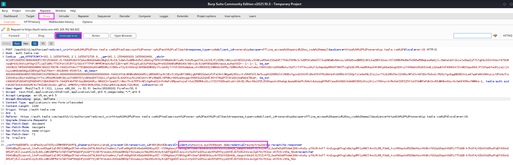
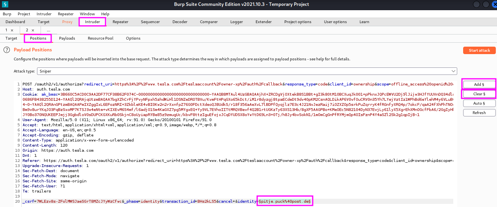

Credential Stuffing and Password Spraying
Credential stuffing means taking breached credentials (e.g. from Breach Parse or website like weleakinfo.to – before it was seized by law enforcement) and trying to use them to log in to an account on a target.
The art of credential stuffing is taking the list of user names and passwords and throwing them at a website.
First, we are going to install a proxy plugin for Firefox called FoxyProxy. FoxyProxy will make it easier for us to switch a proxy on for use with Burp Suite. To this end, we add a new proxy, name it Burp Suite and the the Proxy Type to HTTP and the proxy IP address and port to 127.0.0.1 and 8080. Then we save the settings, which allows us from now on, to switch the proxy on with just a click on the fox in the upper right corner of our Firefox window.
{kind=link}
This tool will make our work with Burp Suite more convenient in the future since we do not have to switch the proxy on and off in the settings menu any more. Now we can just start Burp Suite as usual, go to the Proxy tab and go to some website to see that we are now intercepting the web traffic as planned. (Just refreshing the current site did not work on my machine!)
With this preparation we go to the Tesla website and search for the login menu. When we have found it and passed the captcha test, we switch to interception mode to make sure that we capture the package with the fake login name and password that we are about to enter.
{kind=link}
When we have found our fake login attempt in Burp Suite, we right-click into the message and chose Send to intruder. Then we go from the Proxy to the Intruder tab and click first on Positions tab, followed by the Clear § button to remove the highlighted, auto-detected items and select the ones that apply for our purpose manually. To do that, we select first the email address that we have used (e.g. pitje.puck) and click Add §, then we do the same with the password that we used for fake login account. When I did this a second time and was not asked for the Captcha process, the HTTP request was different from the first attempt, see below. I am not sure what to make of this, maybe this splitting of user name and password will already prevent this kind of automated credential stuffing.
{kind=link}
I will not follow the rest of the procedure demonstrated in this video since (a) Tesla apparently recognizes and blocks traffic from a VPN service and (b) TCM recommended against it to be sure that we do not risk any legal issues if Tesla changed the conditions for their bug bounty program. Here is what the next steps of this credential stuffing attack with BurpSuite look are:
Next, we select the Attack type. The Sniper type uses only one parameter, whereas we want to use two, user name and password, therefore we chose Pitchfork. After that, we move over to the Payloads tab and copy/paste or load our user name and password lists into the web mask, setting the Payload set to 1 for the user names (selected first in the previous step), followed by the same procedure with the breached passwords for Payload set 2. The Payload type is set to Simple list for both lists. The numbers of user names and passwords should be the same now, so that BurpSuite can use them in pairs and replace the selected parameters in the captured HTTP request one pair after the other. When this is all set up properly, we can click on Start attack in the upper right corner.
When the attack runs, we watch out for HTTP status code changes, e.g. from 200 to 301, which represents a redirect, or the length of the reply changes notably. We can also select one result and look at the response to our HTTP request to check if there is any textual clue like “We could not sign you in”, which we can copy and use for a text filter when we go back one step and click on the Options tab. We can first remove all other keyword filters and then add our own, which will result in an additional checkbox column during the scan indicating whether our phrase has been found in the response or not. When the scan is finished, we can sort our results by this checkbox column and find the ones where the phrase did not occur, which will then hopefully be our successful logins.
Password spraying works in a similar fashion: we use a list of known user names again, e.g. from hunter.io, Linkedin and other OSINT sources, and scan them versus a fixed password that we edit manually in the captured HTTP package. When we chose our password wisely, we may be able to find users that have chosen that password. The advantage is that we do not necessarily have access to breached credentials, only to user names.
The downside of this approach when we are trying to break into Active Directory accounts is that the server might automatically log the respective user out after a certain number of failed login attempts. In a pentest, it is a good idea to check with the customer how many attempts can be made before a user is locked out to prevent that several users cannot log in to their account any more or we even cause a denial of service. One can also run just single or double rounds and wait a few hours after these rounds.
To run the attack, we change the attack mode to Sniper because we want to scan only a single parameter, the user name. Otherwise, the rest works the same way as credential stuffing. We look for the HTTP response code, response length or we filter for a particular text.
Credential stuffing and password spraying are by far the most common ways to break into networks in an external pentest, followed by using default credentials, but not so much vulnerability exploits.
TCM warns of vulnerabilities that bad actors may well have found before us since they are constanly scanning the web for vulnerabilities. He also stresses the importance of reconnaissance again to find the necessary data to launch a credential stuffing/password spraying attack with BurpSuite. TCM says that once you are inside a network, the internal attack is often rather easy.